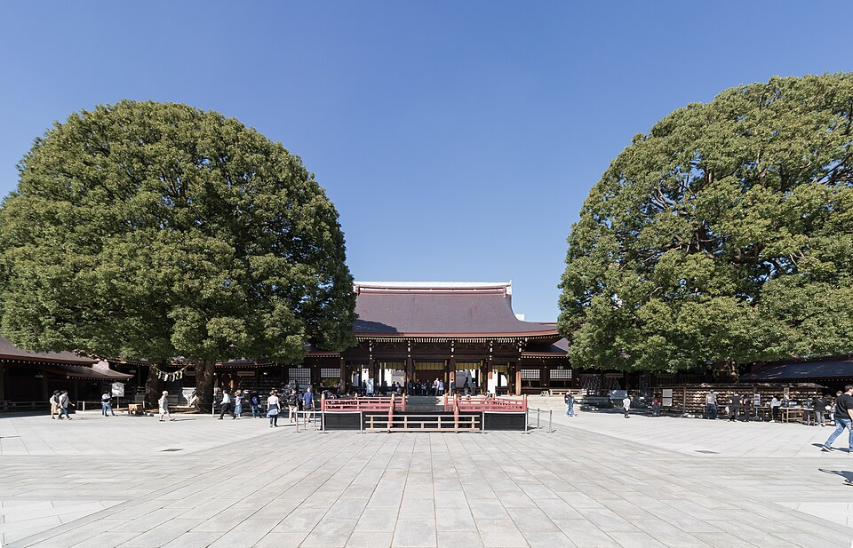

Photo credit: Aw1805, CC BY-SA 3.0; Kakidai, CC BY-SA 4.0; Rei at en.wikipedia, CC BY-SA 3.0 (Wikimedia Commons)
Meiji Jingu, Yoyogi Park and Harajuku
A · Strongest fitThe best-rated free walk in Tokyo: the forest approach to Meiji Jingu, Yoyogi Park and then Harajuku's shopping streets in one connected route. The shrine gate closes before 16:30, so go in the morning, and expect Takeshita Street to be a crush.
Route: Harajuku Station, the forest approach to the main shrine, Yoyogi Park, then Takeshita Street and Omotesando as an add-on (iteration 1) [S49]. Takeshita Street at its busiest is a shuffle; the parallel streets are calmer (iteration 1) [S49].
Main tradeoff: The shrine gate closes at 16:10 in November and Takeshita Street is a crush.
Why it ranks here: The best-rated free walk in Tokyo: a forest approach, a large park and a shopping district in one connected route; the shrine gate closes before 16:30, so go in the morning.
More details and sources
- Traveler evidence
- Seen 2026-10-19/20: Google Maps Meiji Jingu 4.7 (53,883) and Yoyogi Park 4.4 (27,722); Takeshita Street, Omotesando and Shibuya Center-Gai show no Google area rating [S41]; marketplace Viator Meiji Shrine walk 5.0 (539-591), with a pooled Viator-TripAdvisor count [S44]. The Must-see pass recorded TripAdvisor 4.4 (8,517) and Beautifully Travelled saying it "costs nothing, takes about an hour" [S51]. No forum thread was read.
- Location and access
- Harajuku or Meiji-jingumae stations (iteration 1) [S49]. Allow 400-800 yen return.
- Time and physical effort
- 2.5-4 hours with the add-ons [S49]. Level gravel and pavement; roughly 3-5 km in total (my estimate); no ascent.
- Approximate cost
- Free. The Inner Garden (about 500) and museum (about 1,000) are blog figures from the Must-see pass [S51].
- Crowds and booking
- No booking. Early morning is calmest; Takeshita Street is busiest after midday and on weekends 28-29 Nov (iteration 1) [S49].
- Late-November / early-December fit
- The shrine hours are Nov 06:10-16:10 and Dec 06:40-16:00 [S06]. Foliage in Tokyo is still a late-November to early-December window [S35]. Wed 2 Dec morning fits; Wed 25 Nov arrival evening does not.
- Safety and constraints
- Gravel is awkward for wheeled luggage. Street snacks on Takeshita Street were not screened for pork.
- Uncertainty / what to verify
- Takeshita Street has no Google area rating; the Inner Garden fee; weekend wedding crowds; Reddit not opened.
- Sources
- S06, S14, S35, S41, S44, S49, S51